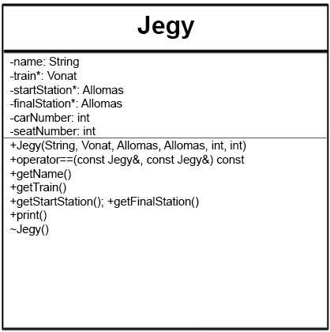
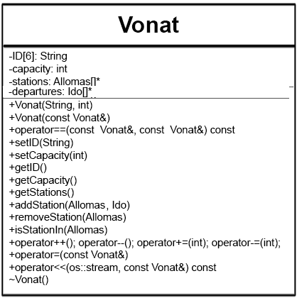

Tervezze meg egy vonatjegy eladó rendszer egyszerűsített objektummodelljét, majd valósítsa azt meg! A vonatjegy a feladatban mindig jegyet és helyjegyet jelent együtt. Így egy jegyen minimum a következőket kell feltüntetni:
A rendszerrel minimum a következő műveleteket kívánjuk elvégezni:
A rendszer később lehet bővebb funkcionalitású (pl. késések kezelése, vonat törlése, menetrend, stb.), ezért nagyon fontos, hogy jól határozza meg az objektumokat és azok felelősségét. Valósítsa meg a jeggyel végezhető összes értelmes műveletet operátor átdefiniálással (overload), de nem kell ragaszkodni az összes operátor átdefiniálásához! A megoldáshoz ne használjon STL tárolót!
A program kiinduló pontja egy menü. Itt 3 opció közül lehet választani, a megfelelő billentyűk lenyomásával. Mind a 3 opció megjelenik a képernyőn:
j)n)s)A jegyvásárlás menüponton belül az alábbi működés legyen érvényes:
A vonatok felvétele a következőképp zajlik:
18:50-es formátumban.Az állomásfelvételekor csupán egy nevet kell megadni, amivel lehet az állomásra hivatkozni. Ha az adott név már létezik, jelezze a kimeneten és kérjen újat.
A bevitt adatokat a program hosszútávon tárolja, nem vesznek el a leállítást követően.
Az Ido objektum feladatköre a menetrendekben az idő tárolása.
Tárolt adatai: óra, perc
A << operátor írja ki az időt a következő formátumban: 18:05
A Jegy objektum a jegyek kezeléséért, tárolásáért, megjelenítésért felel.
Tartalmazzon pointert a megfelelő vonatra, pointert a kezdő és cél állomásra, valamint egy Stringet a névhez. Ezen felül a helyjegy értelmében egy kocsi, illetve egy ülés számot is.
A string dinmaikusan foglalt területen legyen.
A print függvény írjon ki minden adatot a jegyről. (Név, vonat, cél-, végállomás, indulás, érkezés ideje.)

A Vonat objektumban tárolom az azonosítóját, kapacitását (kocsik száma), illetve egy listát az érintett állomásokról. A redundancia elkerülése érdekében ezek legyenek pointerek.
Ne legyen alap konstruktor, kötelező megadni azonosítót, kapacitást (ennek default értéke 3), valamit az állomásokat.
Mivel az azonosító maximum 6 karakter hosszú lehet, nem kell dinamikusan tárolni.
Legyen minden adattárolóhoz megfelelő getter és setter.
A print() függvény írja ki a következő adatokat a megfelelő formában: [ ID | Kiinduló állomás: állomás | Végállomás: végállomás | Szabad helyek: num ]
A << operátor csak az azonosítót írja ki egy kapott os stream-re.
A -= operátor a kapacitást csökkentse megfelelelő int-el.
Ehhez természetesen csatolni kell a másoló konstruktort és operátort, a - és -- operátorokat. Illetve eleganciából a + és += operátorokat, bár ennek egyelőre nincs kimondott haszna. (Elgondolkodtató, hogy ezek inkább nevesített függvényként legyenek megvalósítva, a félreértések elkerülése végett)

Az Allomas osztály feladata egy állomás és az abban közlekedő, az őt érintő menetrend kezelése.
Az == operátor a pontos névegyezésre térjen vissza true-val, a searchByName pedig minimum 4 karakteres egyezéssel térjen vissza az egyezések számával.
std::string nev;
std::string keresett;
ciklus keresett utolsó karakterétől 4-ig [j]:
ciklus 0-tól nev utolsó karakterig [i]:
HA keresett[0:j] == nev[i:i+j]:
return j;
EGYÉBKÉNT HA keresett[keresett.hossz-j:keresett.hossz] == nev[i:i+j]:
return j;
ciklus vége
ciklus vége
return 0;

Legyen a Menetrend az állomásokon a vonatok indulásának kezelésért felelős.
Az osztályban az indulás időpontját és az adott vonatra egy referenciát tároljon.
Legyen egy print függvénye, ami kiírja az indulás időpontját, a vonat azonosítóját és az állomást.